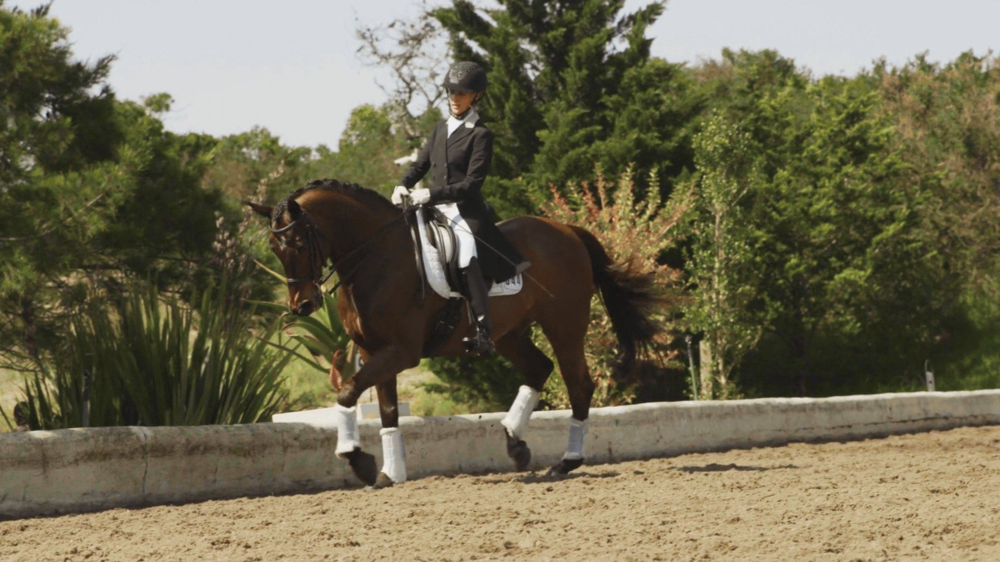
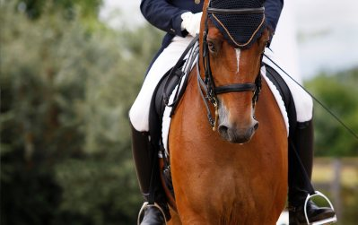
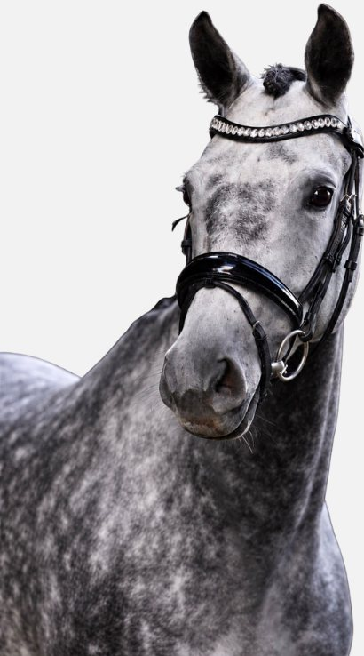
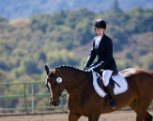
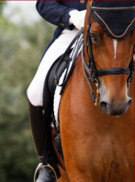
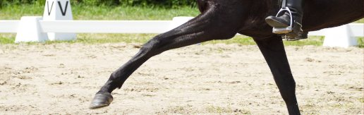
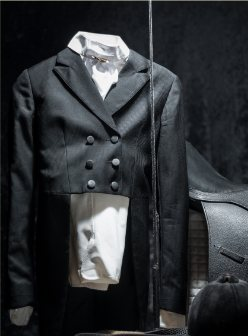
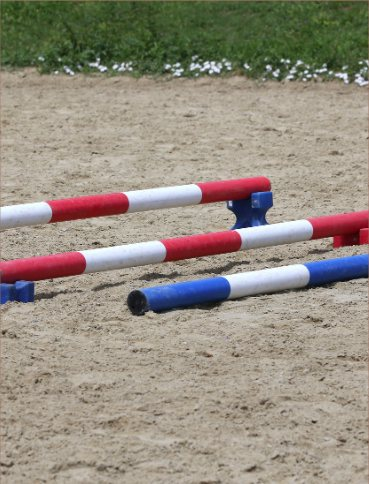
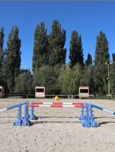

Home / Program Curriculum
Program Curriculum
A structured path from first principles to the FEI ring — built on the classical training scale and delivered by trainers who have ridden it.
About the
Program

Valdara was founded on a simple idea: that horse and rider should progress together, on a clear plan, with nothing left to chance. Every rider in the program follows a written curriculum with defined goals for each phase — reviewed with their trainer every eight weeks.
Our curriculum draws on the German and Dutch systems that produce the world's most consistent dressage results, adapted for the American show calendar. Riders advance on demonstrated skill, not time served — and every phase ends with a ridden test in front of an outside judge.
The Six Pillars
The classical training scale is the backbone of everything we teach. Each pillar builds on the one before it — skip one, and the whole structure weakens.
Rhythm
Regular, even tempo in every gait — the non-negotiable starting point.
Suppleness
Freedom from tension, through the back and over the topline.
Contact
A steady, elastic connection from the rider's hand to the bit.
Impulsion
Controlled energy from the hindquarters, carried forward.
Straightness
Hind feet track the front, so power travels true.
Collection
Weight shifted to the haunches — the source of lightness and brilliance.
From Foundation
to FEI
Four phases, each with a written syllabus, monthly progress reviews, and a judged assessment before advancing.
Foundation
- Independent seat and position on the lunge
- Correct aids for the three basic gaits
- Accurate figures: circles, serpentines, diagonals
- Horsemanship, grooming, and tack fitting
Development
- Lengthenings, leg-yield, and shoulder-in
- Introduction to collection and counter-canter
- Schooling show season at USDF-recognized shows
- Fitness and conditioning plans for horse and rider
Refinement
- Half-pass, flying changes, and tempi introduction
- Working and collected pirouettes
- Regional championship qualification
- Video analysis with outside clinicians
Mastery
- Piaffe, passage, and one-tempi changes
- Competition strategy and peak planning
- International clinic and show placement
- Mentorship of riders in earlier phases





About Our Programming
Each rider receives a written plan, weekly lesson notes, and a progress review every eight weeks. Horses in full training follow a parallel plan built by their trainer and our veterinary team.
Read more

Approach
in Style
and Substance
Turnout, tack, and presentation are part of the curriculum. Our riders learn to braid, to present a horse in hand, and to carry themselves in the arena the way a Grand Prix rider does — long before they get there.

Training to the Top

We know what it takes to bring a horse and rider to the top of the sport. Our trainers have developed horses from foals to the FEI levels and coached riders to regional and national championships.
No matter where you are starting, Valdara has the structure, the horses, and the people to take you further than you thought possible.
Explore LessonsBefore You Join
Do I need my own horse to join the program?
No. Riders in Phases I and II train on Valdara schoolmasters. Leasing options are available for Phase III and above, and we can help source and evaluate a horse for purchase when you are ready.
How is progress measured?
Every phase has a written syllabus. Your trainer reviews progress with you every eight weeks, and you advance after riding an assessment test scored by an outside judge.
Can I bring my horse into training?
Yes. Full training and training-board packages include five rides per week by a Valdara trainer, lessons for the owner, and show coaching. Placement depends on availability.
Is the program suitable for adult amateurs?
Absolutely. Many of our riders are adult amateurs balancing careers and families. Lesson schedules and show plans are built around your calendar.

Join Our Program
Start with an evaluation lesson. We'll assess your position and goals, then recommend the right phase and schedule.